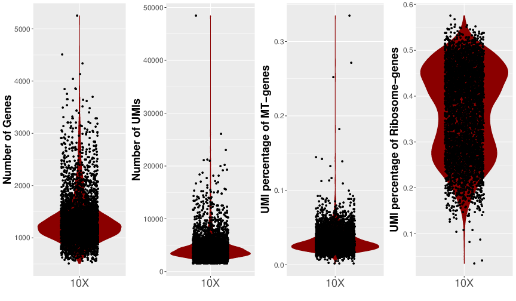
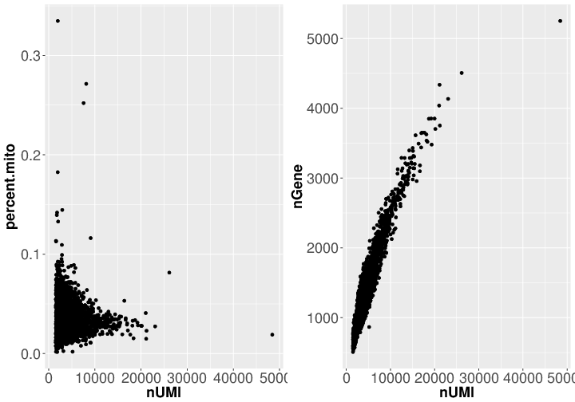

10X Genomics 单细胞测序数据分析报告
Custom:Custom Contract:Contract
本实验采用10X单细胞应用和Illumina测序平台的双端测序模式对样本进行高通量测序， 采用10X内部软件Cell Ranger对原始数据采用STAR比对于Ensembl参考基因组序列， 包括外显子， 内含子， 基因间隔区域以及整个转录本区域进行比对统计，该软件通过细胞识别算法区分细胞的Barcode序列标记和细胞内不同mRNA分子的UMI标记， 经过过滤筛选统计检测到的细胞数，细胞序列数以及基因数。 部分细胞由于RNA含量较低或者其余原因得到的序列数偏少为则被认为是背景噪音。
测序数据质量统计结果(cellRange_QC.html)
测序数据质量统计结果说明
| 术语 | 术语说明 |
|---|---|
| Read1 | 靠近转录本3端的序列标签，长度为98bp |
| 10X Barcode | 标记细胞的Barcode序列，长度为16bp |
| Sample Index | 标记样本的Index序列，长度为8bp |
| Read2 | 标记每个mRNA分析的UMI序列，长度为10bp |
| Number of Cells | 高质量细胞数，小于所有细胞的UMI总数的99%分位数的10%定义为背景噪音细胞 |
| Mean reads per Cell | 每个细胞的平均序列数 |
| Median genes perl Cell | 每个细胞中的中值基因数，比对到序列大于0被定义为检测到的基因 |
| Number of reads | 所有比对到的序列数 |
| Valid Barcodes | 带有正确标记的序列数百分比，每个标记对应到每个细胞 |
| Reads Mapped Confidently to Transcriptome | 比对到数据库已知参考基因的序列数百分比 |
| Reads Mapped Confidently to Integenic Regions | 比对到数据库的基因间隔区域的序列数百分比 |
| Reads Mapped Confidently to Intronic Regions | 比对到数据库的内含子区域的序列数百分比 |
| Reads Mapped Confidently to Intergenic Regions | 比对到数据库的基因间隔区域的序列数百分比 |
| Sequencing Saturation | 序列饱和度估计 |
| Q30 Bases in Barcode | 标记中质量分数大于等于30的碱基百分比 |
| Q30 Bases in RNA Read | Read中质量分数大于等于30的碱基百分比 |
| Q30 Bases in Sample Index | Samle index中质量分数大于等于30的碱基百分比 |
| Q30 Bases in UMI | UMI标记中质量分数大于等于30的碱基百分比 |
| Estimated Number of Cells | 估计检测到的高质量细胞数 |
| Fraction Reads in Cells | 落于高质量细胞的序列数百分比 |
| Mean Reads per Cell | 每个高质量细胞的平均序列数 |
| Median Genes per Cell | 每个高质量细胞的基因数中值 |
| Total Genes Detected | 所有细胞检测到的基因总数 |
| Median UMI Counts per Cell | 每个高质量细胞的平均UMI数 |
图A:单细胞的基因数,UMI序列数以及来自线粒体基因的UMI序列比例，横坐标表示细胞编号，纵坐标表示此细胞中的基因数,UMI序列数,来自线粒体基因的UMI序列比例和来自编码核糖体基因的UMI序列比例和

图B:单细胞的UMI序列数与来自线粒体基因的UMI序列比例的散点图，单细胞的UMI序列数与基因数的散点图
